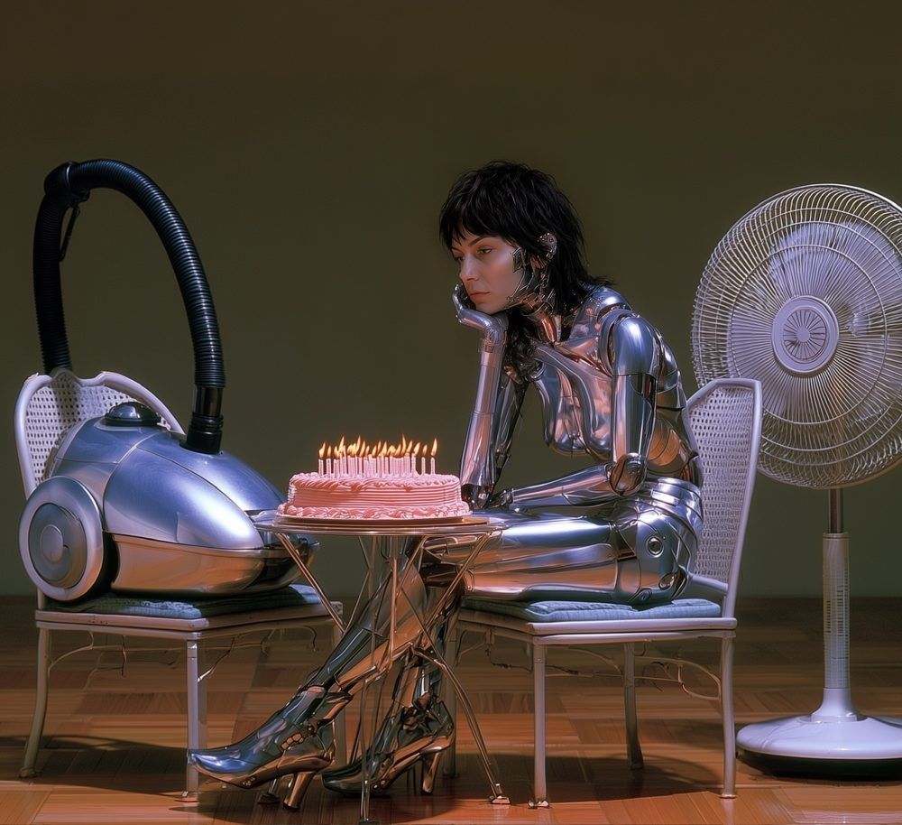

Crierbaby
Posts a photo to Bluesky every day with a caption an AI writes in your voice. Tell its agent about trips, links, or tone and it works them into upcoming captions. You just approve.
⚠ Live demo in progress
I build automation and web tools as Unlikely Archivist. Before that, I ran prop departments on feature films.
For years I worked in film as a property master and assistant propmaster: breaking scripts down into lists of everything that has to exist, sourcing and building it, and running budgets and crews against shoot days that don't move.
Now I build software the same way. Small tools that solve a specific problem and actually ship.

Posts a photo to Bluesky every day with a caption an AI writes in your voice. Tell its agent about trips, links, or tone and it works them into upcoming captions. You just approve.
⚠ Live demo in progress
Automated obituaries for dead domains.
⚠ Latest obituary will load here live
An Obsidian template that merges notes into one master document, pulling in embeds without the "echo" from heavily cross-embedded vaults and keeping folder structure intact.
My thesis film Lemonade screened at the Savannah Film Festival, the Wexner Center's Ohio Shorts program, and five other festivals, and won Best Student Film at Festigious.